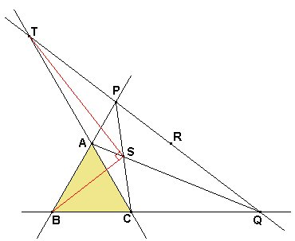
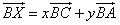
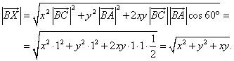
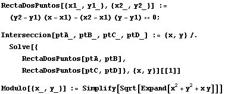
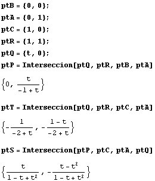
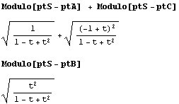
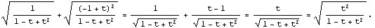
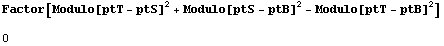

|
Sea el triángulo equilátero ABC, por el punto R simétrico de B con respecto a AC se traza una recta que corta a las prolongaciones de BA y BC en P y Q respectivamente. Además si S es el punto de corte de AQ y PC, y T es el punto de corte de AC y PQ. Demostrar que: SB = SA + SC y ÐBST = 90º. |
|
Propuesto por Juan Carlos Salazar
|
Solución de Francisco Javier García Capitán

Usemos las coordenadas oblícuas. Tomamos como referencia el punto B y los vectores BC y BA, de manera que las coordenadas del punto X serán (x, y) si se cumple la relación
No perdemos generalidad si consideramos que el triángulo ABC tiene de lado 1. Entonces, el módulo del este vector BX será

Entonces podemos preparar las funciones:

Ahora introducimos o calculamos los puntos que intervienen en el enunciado:

Y acto seguido comprobamos lo que hay que demostrar. Primero que SA + SC = SB.

La igualdad SA + SC = SB se cumple porque, al estar Q en la prolongación de AC, es t>1, y por tanto también es

Para comprobar que el triángulo BST es rectángulo en S hacemos
